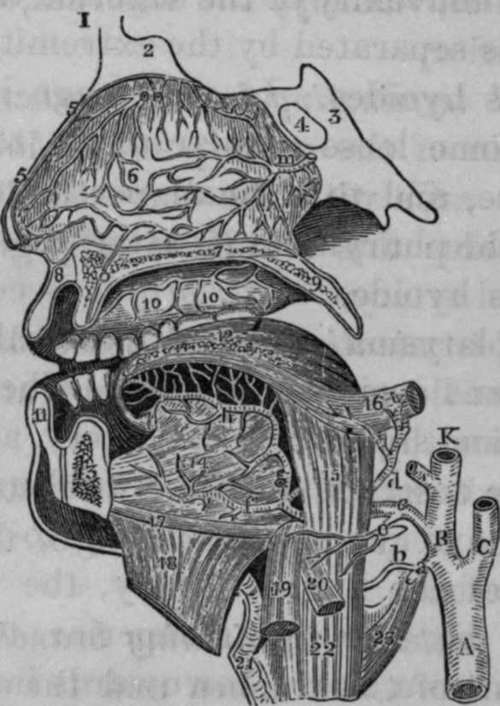

The Lingual Artery
Description
This section is from the book "Anatomy Of The Arteries Of The Human Body", by John Hatch Power. Also available from Amazon: Anatomy of the Arteries of the Human Body, with the Descriptive Anatomy of the Heart.
The Lingual Artery
The Lingual Artery is the next in order, but, as the branches of the facial or labial are more superficial, the student will find it expedient to dissect these first, and afterwards examine the course and branches of the lingual. This latter vessel arises a little above the superior thyroid, and nearly opposite the os hyoides: it may be divided into three stages: in the first, it extends from its origin to the outer edge of the hyo-glossus muscle; in the second, it passes behind (or, more correctly speaking, deeper than) the muscle; in the third stage it gets the name of the ranine artery, and extends from the internal margin of the hyo-glossus muscle to its termination.
Fig. 11. Dissection of the Lingual Artery.
1, Frontal Bone. 2, Crista Galli of the Ethmoid bone. 3, Sphenoid Bone. 4, Sphenoidal Sinus. 5, 5, Vertical section of the Nose. 6, Septum of Nose, with arterial anastomoses. 7, Twig from one of the terminating branches of the Spheno-palatinc Artery, descending through the Canal, O. 8, Upper Lip. 9, Soft Palate, or Velum Pendulum Palati. 10, i0, Branches of the Superior Palatine Artery which descend through the Posterior Palatine Canal. 11, Lower Lip. 12, The Tongue. 13, Lower Jaw. 14, Genio-hyo-glossus Muscle. 15, Hyo-glossus Muscle. 16, Style-glossus Muscle. 17, Geniohyoid Muscle. 18, Mylo-hyodeus cut and reflected. 19, Portion of Sternohyoid Muscle. 20. Part of the Omo-hyoid Muscle. 21, Thyroid Cartilage. 22, Thyro-hyoid Muscle. 23. Portion of Inferior Constrictor of the Pharynx. A. Common Carotid Artery. B, K, External Carotid Artery. C, Internal Carotid, a, Superior Thyroid Artery cut. b, Superior Laryngeal Branch of Thyroid, c. Lingual Artery, d, Dorsalis Linguae, e, Hyoidean Branch of Lingual Artery, f, Sublingual Artery, g, Ranine Artery ascending to the base of the Tongue, h, Continuation of Ranine Artery, i. Facial or External Maxillary Artery, m, Branch of Spheno-palatine Artery, n, Branch of Anterior Ethmoidal Artery, o, Incisive Canal.
In the first stage it ascends a little, and then turns inwards, to get above the great cornu of the os hyoides, making a curvature, the convexity of which looks upwards, while the concavity, looking downwards, corresponds to the convexity of the superior thyroid artery, from which it is separated by the extremity of the great cornu of the os hyoides. In this stage it corresponds posteriorly to some loose areolar tissue, to the superior laryngeal nerve, and to a small portion of the middle constrictor of the pharynx at its attachment to the great cornu of the os hyoides: anteriorly it is covered by the integuments, platysma myoides, cervical fascia, lymphatic glands, and some small veins. The lingual nerve lies superficial and superior to the artery, and sometimes, when the nerve descends a little lower down than usual, it touches the artery: corresponding to the first stage of the course of the lingual artery, the tendon of the digastric may be seen lying superior to the lingual nerve; so that from above downwards in this situation we find, first the tendon, secondly the nerve, and lastly the artery.
In the second stage the artery passes upwards and in-wards, and frequently pierces the posterior fibres of the hyo-glossus muscle in order to get to its deep-seated surface, along which it then passes: the hyo-glossus thus separates the lingual artery from the lingual nerve, which latter lies upon the cutaneous surface of the muscle. In this second stage the artery at first frequently lies superficial to a few of the posterior fibres of the hyo-glossus muscle; these fibres have received the name of cerato-glossus muscle: afterwards when it gets to the deep-seated surface of the hyo-glossus, it runs along the external surface of the middle constrictor of the pharynx at its origin from the great cornu of the os hyoides: this portion of the bone lies immediately below the arteiy, and the vessel itself still lies below the level of the nerve. In this situation the artery sends minute branches to the middle constrictor.
In the third stage, where it is sometimes called the ratline artery, it ascends a little to reach the base of the tongue, and then proceeds horizontally along the inferior surface of this organ between the genio-glossus and lingualis muscles, and above the frsenum linguae: here it terminates in anastomosing with the artery of the opposite side. In this third stage it is accompanied by the ninth nerve, which at the anterior edge of the hyo-glossus muscle turns under, that is, superficial to the artery, and then proceeds along its inner side, towards the tip of the tongue; so that in this situation the two lingual nerves lie between the two arteries.
The branches given off by the lingual artery are three in number:
The Hyoidean, Dorsalis Linguae and Sublingual.
The Hyoidean Branch
The Hyoidean Branch usually arises at the outer edge of the hyo-glossus muscle : it supplies the epiglottidean gland, and the muscles attached to the os hyoides, and anastomoses with the corresponding branch of the opposite side and with the superior thyroid artery.
The Dorsalis Linguae
The Dorsalis Linguae may be traced running upwards and outwards, under cover of the hyo-glossus muscle, towards the base of the tongue; some of its branches are lost in the stylo-glossus muscle and base of the tongue; while others, ascending, supply the tonsil and velum palati. It lies immediately under the mucous membrane. In many cases this artery is deficient or diminutive, and sometimes its place is supplied by two or three very small branches.
The Sublingual Artery
The Sublingual Artery proceeds forwards and outwards to supply the gland of the same name: it also sends branches to the mucous membrane of the mouth, and often one that pierces the mylo-hyoid muscle to arrive at the anterior belly of the digastric. It anastomoses with that of the opposite side and with the submental artery. Sometimes the place of this artery is supplied by a large branch from the submental, which pierces the mylo-hyoid muscle to arrive at the gland.
Accompanying Veins
The lingual artery is accompanied in its first and second stages by one or two vence comites, which arise from a plexus at the base of the tongue, and terminate in the internal jugular vein. From the same plexus arises a satellite vein of the lingual nerve, which accompanies the hypo-glossal or ninth nerve, and opens into the facial, or into the pharyngeal vein: lastly, the ravine vein lies on the inferior surface of the tongue, superficial and external to the artery in its third stage, and then passes between the mylohyoid and hyo-glossus muscles to terminate in the facial vein.
Continue to:
- prev: The Inferior Laryngeal Or Crico Thyroid Branch
- Table of Contents
- next: Operation Of Tying The Lingual Artery